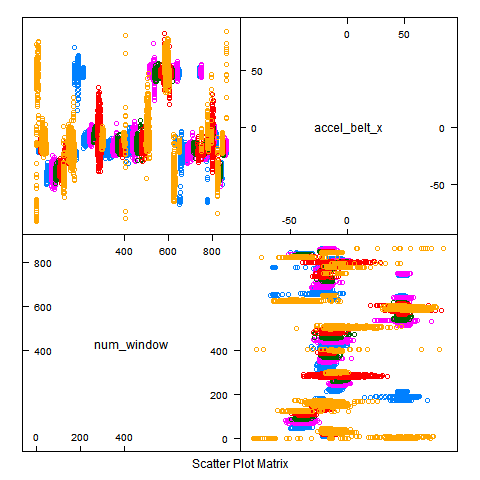

The goal of the project assignment is to predict the manner exercises are done from the data recorded in the accelerometers on the belt, forearm, arm, and dumbell of 6 participants. The variable name for prediction is "classe" and the other variables are used to predict "classe" value. This report describes the steps to built the model, cross validation steps and the expected out of sample error.
There is no specific requirement for prediction accuracy rate. However, let us assume that the prediction error rate to be less than 10%.
The data loaded from the two .csv files provided for the project. Followind is the R code for loading the data into two variables.
library(caret)
trn <- read.csv("pml-training.csv", na.strings = c("NA", "", "#DIV/0!"))
tst <- read.csv("pml-testing.csv", na.strings = c("NA", "", "#DIV/0!"))
#Split training data for cross validation trninx <- createDataPartition( y = trn$classe, p = .8, list = FALSE )
trnmod <- trn[trninx,]
trnvld <- trn[-trninx,]
The dataset contains 160 variable including the prediction variable. As instructed, the following variables are selected for detail analysis. The other variables are also considered for inclusion in the model.
Belt : accel_belt_x,accel_belt_y,accel_belt_z
Forearm : accel_forearm_x,accel_forearm_y,accel_forearm_z
Dumbell : accel_dumbbell_x,accel_dumbbell_y,accel_dumbbell_z
Arm : accel_arm_x,accel_arm_y,accel_arm_z
Following is the R code for assigning the data to the new variables for the selected variables.
trnmodsmpl <- trnmod[,c("num_window", "accel_belt_x", "accel_belt_y", "accel_belt_z",
"accel_forearm_x", "accel_forearm_y", "accel_forearm_z",
"accel_dumbbell_x", "accel_dumbbell_y", "accel_dumbbell_z",
"accel_arm_x", "accel_arm_y", "accel_arm_z",
"classe" )]
trntstsmpl <- trnvld[, c("num_window", "accel_belt_x", "accel_belt_y", "accel_belt_z",
"accel_forearm_x", "accel_forearm_y", "accel_forearm_z",
"accel_dumbbell_x", "accel_dumbbell_y", "accel_dumbbell_z",
"accel_arm_x", "accel_arm_y", "accel_arm_z",
"classe" )]
tstsmpl <- tst[, c("num_window",
"accel_belt_x", "accel_belt_y", "accel_belt_z",
"accel_forearm_x", "accel_forearm_y", "accel_forearm_z",
"accel_dumbbell_x", "accel_dumbbell_y", "accel_dumbbell_z",
"accel_arm_x", "accel_arm_y", "accel_arm_z",
"problem_id" )]
The following are R few R commands, I used for exploratory analysis and visualisations.
featurePlot(x = trnmodsmpl[,c(1,2)], y = trnmodsmpl$classe, plot = "pairs")
for (i in 1:13)
{
print(i)
plot(trnmodsmpl[,2], trnmodsmpl[,i],
col = trnmodsmpl$classe, main = i
)
cat("Press Enter to continue ...")
Ln <- readline()
}
Following are few examples of the visualisations.

After exploratory analysis, I have used few methods to train the model. Finally I used random forest method for better result. I am using preProcessing "pca" to improve the accuracy.
>modFit <- train(classe ~ ., method = "rf", preProcess = "pca", data = trnmodsmpl)
Following the generated model information
> modFit$finalModel
Call:
randomForest(x = x, y = y, mtry = param$mtry)
Type of random forest: classification
Number of trees: 500
No. of variables tried at each split: 2
OOB estimate of error rate: 6.82% Confusion matrix:
A B C D E class.error
A 4284 49 59 64 8 0.04032258
B 153 2706 99 38 42 0.10928242
C 41 76 2570 41 10 0.06135866
D 36 24 123 2356 34 0.08433735
E 21 46 37 69 2713 0.05994456
The validation data set is used for calculating the expected error as follows -
pred <- predict(modFit, trntstsmpl)
valTab = table(pred,trntstsmplclasse)diag(valTab) = 0errRate = sum(valTab)/length(trntstsmplclasse)
Output of valTab:
>valTab
pred A B C D E
A 1074 25 12 9 4
B 10 689 21 4 22
C 16 24 638 32 9
D 16 12 10 594 24
E 0 9 3 4 662
Output of errRate:
>errRate
[1] 0.06755034
The expected out of sample error is 06.76%
predTst <- predict(modFit, tstsmpl)
The predTst provides the prediction of the test data file for the assignment.